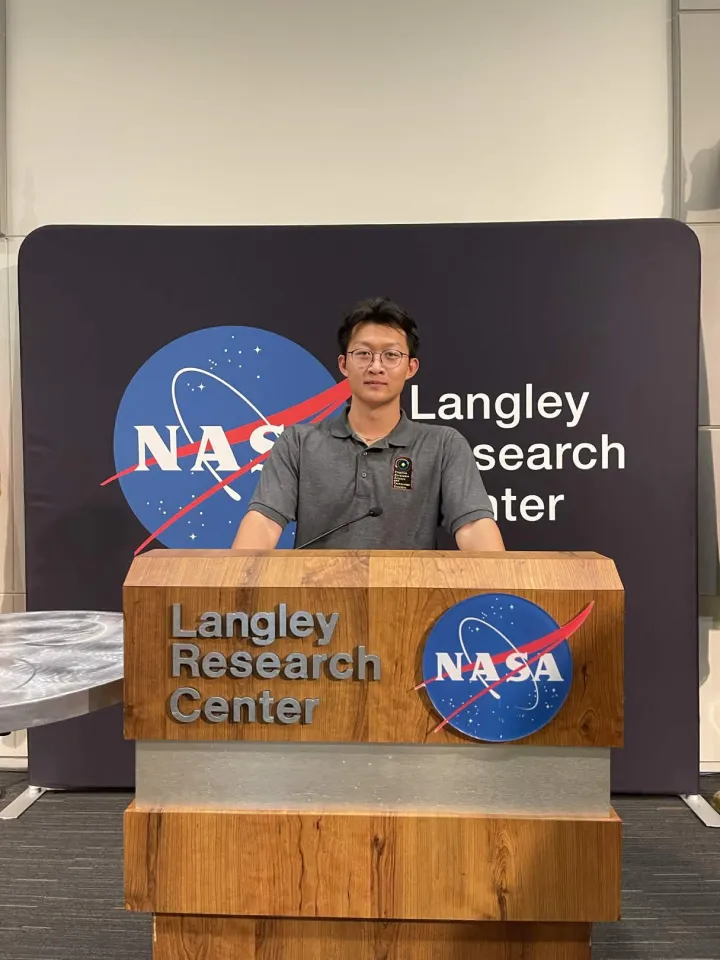

Computer Engineering @ Georgia Tech
I'm a first-year ECE student at Georgia Tech with a 4.0 GPA, originally from Fairfax, VA. I'm really passionate about AI and machine learning — pretty much anything involving building intelligent systems that can actually do something useful in the real world.
I've had the chance to do research at NASA Langley, work as a software developer at HexLabs, and build some cool projects at hackathons. This site is kind of an overview of everything I've been working on so far, and where I'm hoping to go.
Researched carbon nanotube electronics for interplanetary travel at NASA Langley Research Center.
Building backend infrastructure and helping organize HackGT at HexLabs — one of the biggest collegiate hackathons in the US.
Runner-up at MongoDB x MLH HexDay, and Google Cloud honorable mention at AIATL2025.
Hey! I'm Joshua Wang, a first-year Computer Engineering student at Georgia Institute of Technology, originally from Fairfax, Virginia. I'm concentrating in Distributed Systems & Software Design, and Systems & Architecture — honestly two areas that I think are really important if you want to build AI systems that actually work at scale and not just on a laptop.
Growing up in Fairfax, I was always tinkering with computers. I started building custom PCs for people in high school and that kind of snowballed into a deeper interest in how hardware and software work together. Eventually that led me toward programming, and then machine learning once I saw what you could actually do with it. My first real exposure to ML research was at Bethel College's Mabee Observatory, where I built a convolutional neural network to denoise astronomical images — which was honestly one of the coolest things I've done.
Last year I got to do a research internship at NASA Langley Research Center, where I was part of a team looking at carbon nanotube-based electronics for interplanetary missions. I also led a 10-student group on Mars mission integration, which involved simulating spacecraft trajectories and designing communication systems. It was a lot of responsibility but I learned so much from it.
Right now I'm a Software Developer at HexLabs here at Georgia Tech, where I work on backend infrastructure and help organize HackGT — one of the largest collegiate hackathons in the country with about 1,000 participants and sponsors like OpenAI, Google, and GitHub. Outside of that I really enjoy building projects at hackathons, which is how SnapShelf and Procuroid came about (more on those in the projects page).
When I'm not coding, I'm usually watching Formula 1, messing around with PC hardware, or trying to keep up with whats happening in the AI space — there's always something new going on.
Georgia Institute of Technology — B.S. Computer Engineering
Expected May 2028 · GPA: 4.00 / 4.00
Concentration: Distributed Systems & Software Design, Systems & Architecture
Below is my current resume. You can download a PDF copy using the button below. I try to keep it up to date as I take on new projects and experiences.
⬇ Download Resume (PDF)A summary of my experience and skills — download the full PDF above for complete details.
Migrated backend infrastructure from Kubernetes to Google Cloud Run using TypeScript and Node.js. Working on Timber, HexLabs' hackathon judging platform, and helping organize HackGT with ~1,000 participants and sponsors like OpenAI and Google.
Investigated carbon nanotube-based electronics for interplanetary travel, showing up to 5x improved radiation resistance vs. standard silicon. Led a 10-student team on Mars mission integration, covering trajectory simulation, thermal modeling, and comms system design.
Built and trained a Python CNN to denoise astronomical images and track celestial objects across 100+ Messier frames, automating multi-frame workflows with up to 25% greater efficiency.
Built and configured custom desktop computers for 15+ clients. Diagnosed and optimized thermal and power performance for a range of systems with 100% customer satisfaction.
To embed your resume PDF here, upload Joshua_Wang_Resume.pdf to your GitHub repo alongside this file, then replace this box with an <iframe>.
My long-term goal is to become an AI/ML Engineer — someone who builds intelligent systems that actually work in production, not just in research papers. I want to work on problems that have real impact, whether that's improving how AI models are deployed at scale, making them more efficient, or applying them to fields like healthcare, space exploration, or robotics.
I'm still early in my career and figuring a lot of things out, but I have a pretty clear idea of the steps I need to take to get there. Here's how I'm thinking about it:
Right now my focus is on getting through the core ECE curriculum — things like data structures, digital systems design, and linear algebra. These aren't always the most exciting classes but I know they're the foundation everything else builds on. I'm aiming to take more advanced ML and systems courses in my later years, specifically classes on machine learning, deep learning, and distributed systems.
I've already started with this at NASA Langley and at Bethel Observatory, but I want to get more involved in AI-focused research while at GT. I'm planning to look into undergraduate research opportunities through GT's various labs — ideally something related to machine learning systems, computer vision, or efficient AI inference. Getting involved in research early is important if I eventually want to pursue a masters degree or PhD.
By my sophomore or junior year, I want to intern at a company working on real AI/ML products. Companies like Google DeepMind, OpenAI, Nvidia, or any startup working on interesting AI applications are what I'm aiming for. The hackathon wins and current work at HexLabs should help build my portfolio for that.
I learn best by building things, so I plan to keep doing hackathons and personal projects throughout college. I also want to start contributing to open source ML projects — it's a great way to improve your skills and get noticed by companies. Projects like SnapShelf and Procuroid are a start, but I want to build things that are more technically deep over time.
After graduation in 2028, I want to start working as an ML or AI systems engineer. Depending on where I am at that point, I might also consider going for a masters in ML or CS to go deeper on the research side. Either way, the goal is to be working on challenging, meaningful AI problems by the time I graduate.
Started at Georgia Tech, joined HexLabs, completed NASA Langley internship, competed in first hackathons. Established a foundation in CS and ECE fundamentals.
Continuing at HexLabs, completing this ePortfolio, taking core ECE courses. Looking into undergraduate research in AI/ML. Working toward first software internship applications.
Goal: land a summer internship at a company working on AI/ML products. Take advanced ML coursework at GT. Start thinking about whether grad school is the right path.
Complete senior capstone, finalize full-time job or grad school applications. Graduate in May 2028 and begin career as an AI/ML Engineer.
Here are some of the projects I've worked on so far. Most of these came out of hackathons, research, or just personal curiosity. I'll keep adding to this page as I build more things throughout college.
An AI-powered food recognition tool that lets you snap a photo of your groceries to automatically identify items, quantities, and expiration dates. Results get stored in a MongoDB-backed "virtual fridge" — the idea was to tackle the fact that over 30% of food gets wasted every year from forgotten or expired items.
I built the full-stack app with a Node.js/Express backend and React/Tailwind CSS frontend, and used Google Gemini for the computer vision piece. Users can view, sort, filter their fridge contents and even get AI recipe suggestions based on what they have.
An AI procurement agent that automates the process of contacting suppliers, negotiating terms, and generating contracts. It uses OpenAI for natural language processing and Eleven Labs + Twilio for multilingual text-to-speech, so it can literally call suppliers on your behalf.
It also does web scraping with Google Gemini to find supplier info, processes call transcripts into a PostgreSQL database, and auto-generates PDF contracts with Python. Built this end-to-end at AIATL2025.
During my time as a lab assistant at Bethel College's Mabee Observatory, I designed, trained, and evaluated a Python-based convolutional neural network to denoise astronomical images and track celestial objects across 100+ Messier frames.
I also engineered a full pre/post-processing pipeline that integrated the model with GIMP and DeepSkyStacker, automating multi-frame workflows with up to 25% greater detection efficiency.
This section will be updated with my ECE 1100 Discovery Project before the Discovery Project Showcase.
Feel free to reach out — always happy to connect with people working on interesting things, or just to chat about AI, tech, or really anything.
GitHub
github.com/wang-joshuaLocation
Atlanta, GA (Georgia Tech)